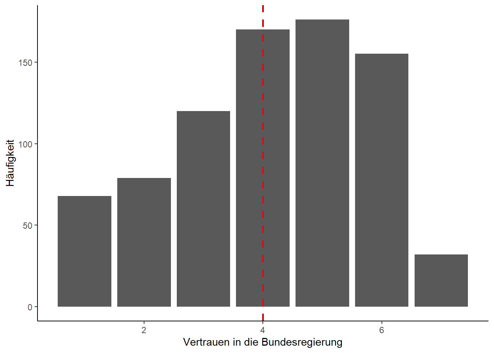
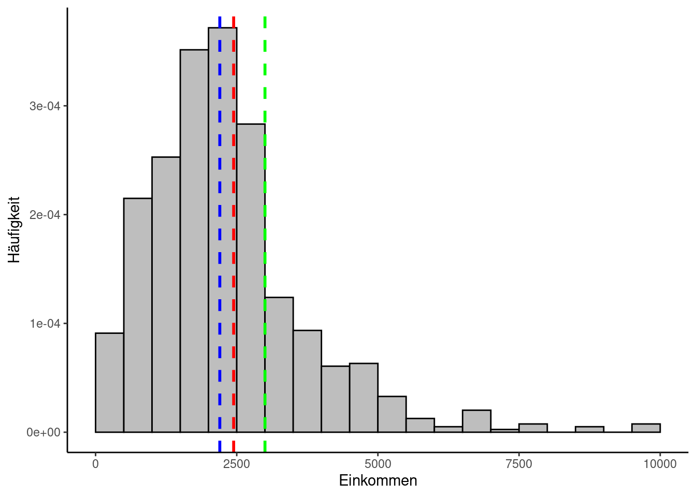
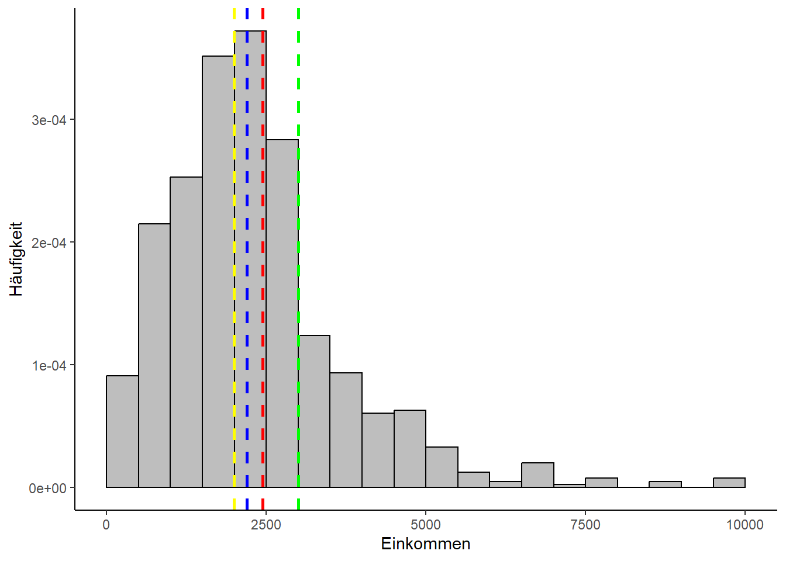

Lade nötiges Paket: pacman
1 Berechnung von Lageparametern
Im Folgenden werden wir aus dem Allbus-2021-Datensatz ein paar Beispiele herausgreifen, um die Berechnung und Visualisierung von Häufigkeiten und Parametern zu demonstrieren.
Dazu installieren und laden wir zunächst die nötigen Pakete mit Hilfe von Pacman und dem p_load-Befehl:
Laden wir zunächst wieder unsere Daten: Da wir uns drei verschiedene Skalenniveaus ansehen wollen, verwenden wir Daten, die jeweils ein solches repräsentieren. Wir laden daher Daten zu Geschlecht (“sex”), Vertrauen in die Bundesregierung (“pt12”) und Netto-Einkommen (“di01a”).
daten = haven::read_dta("Datensatz/Allbus_2021.dta")
allbus_df <- daten %>%
select(c("sex", "pt12", "di01a")) %>%
mutate(across(c("sex", "pt12", "di01a"), ~ as.numeric(.))) %>%
mutate(across(c("sex", "pt12", "di01a"), ~ ifelse(.%in% c(-7, -9, -11, -15, -42, -50 ), NA,.))) %>%
na.omit()
colnames(allbus_df) <- c("Geschlecht", "VertrauenBR", "Einkommen") # Umbenennen der Spaltennamen- 1
-
Wir erstellen ein neues Objekt basierend auf dem Datensatz
daten - 2
- Wir wählen die Variablen aus
- 3
-
Die Kombination aus
mutateundacrossermöglicht es uns die Funktionas.numericin einer Zeile auf alle zuvor ausgewählten Variablen anzuwenden. Die~gibt den Start der anzuwenden Funktion (hieras.numerican), der Punkt innerhalb der Klammer deras.numericFunktion dient als eine Art Platzhalter für die zuvor ausgewählten Variablen - 4
-
Wir codieren die unterschiedlichen fehlenden Werte um (aus der Allbus-Dokumentation entnommen). Hierfür greifen wir auf die Funktion
if_elsezurück. Dabei handelt es sich um ein Entweder-Oder-Befehl. Konkret wird zunächst eine Bedingung geprüft und dann auf dieser Grundlage entweder Option 1 oder Option 2 ausgeführt. Der Punkt vor%in%dient wiederum als Platzhalter, mit dem Ausdruck%in%prüfen wir, ob die nachfolgenden Werte (also c(-9, -11, -42)) in der jeweiligen Variable vorkommen. Hierbei handelt es sich um unsere Bedingung für den Entweder-Oder-Befehl. Wenn einer der Werte aus der geprüften Variable einem der spezifizierten Werte entspricht - also unsere Bedingung erfüllt - wird dieser durchNAersetzt. Ist die Bedingung nicht erfüllt, wird die andere Option ausgeführt und der bereits existierende Wert wird beibehalten. - 5
-
Wir entfernen mit der Funktion
na.omitfehlende Werte aus dem Datensatz
p_load(tidyverse, ggplot2, haven, dplyr)
theme_set(theme_classic())
daten = haven::read_dta("Datensatz/Allbus_2021.dta")
allbus_df <- subset(daten, select=c("sex", "pt12", "di01a")) %>%
mutate(across(c("sex", "pt12", "di01a"), ~ as.numeric(.))) %>%
mutate(across(c("sex", "pt12", "di01a"), ~ ifelse(.%in% c(-7, -9, -11, -15, -42, -50 ), NA,.))) %>%
na.omit()
colnames(allbus_df) <- c("Geschlecht", "VertrauenBR", "Einkommen") # Umbenennen der Spaltennamen1 Der Modus
Der Modus, auch Modalwert genannt, gibt an, welche Ausprägung eines gemessenen Merkmals am häufigsten vorkommt.
1.1 Berechnung
Wir müssen einfach nur zählen, wie oft jede Merkmalsausprägung vorkommt. Diejenige mit dem höchsten Wert (bzw. der größten absoluten Häufigkeit) ist der Modus. In R gibt es keine vorgefertigte Funktion, die diesen Parameter berechnet. Das folgende Code-Beispiel zeigt eine mögliche Lösung speziell für unseren “allbus.df$Geschlecht”-DataFrame.
get.mode <- function(vector){
# Häufigkeitstabelle erstellen:
frequencies = table(vector)
# Höhe der größten Häufigkeit ermitteln:
max.freq <- max(frequencies)
# Teiltabelle erstellen, die nur die Spalten mit der höchsten Häufigkeit enthält:
where.max <-frequencies == max.freq
# Namen der verbliebenen Spalten (= Modus) ermitteln:
modus <- names(frequencies[where.max])
return(modus)
}
#Ausgabe des Modus:
cat("Der Modus lautet ", get.mode(allbus_df$Geschlecht), ".")Der Modus lautet 1 .2 Der Median
Für mindestens ordinal skalierte Messwerte empfielt sich neben dem Modus zusätzlich der Median. Einen der Größe nach aufsteigend sortierten Datensatz teilt der Median genau in der Mitte, es liegen also genauso viele Elemente links wie rechts davon.
2.1 Berechnung
Für den Fall, dass die Anzahl an Elementen im Datensatz \(n\) ungerade ist, entspricht der Median dem Messwert, der genau in der Mitte liegt:
\[ x_{Med} = x_{\frac{n + 1}{2}} \]
Ist \(n\) gerade, kann jedes der beiden Elemente, die in der Mitte liegen, als Median verwendet werden. Es ist aber eher üblich, beide zu addieren und dann durch zwei zu teilen:
\[ x_{Med} = \frac{1}{2} (x_{\frac{n}{2}} + x_{\frac{n}{2} + 1}) \]
R stellt eine Funktion zur Berechnung des Medians bereit. Wir schauen uns als Beispiel das Vertrauen der Allbus-Befragten in die Bundesregierung an: Im Gegensatz zum Geschlecht können wir hier eine Rangfolge festlegen, jedoch nicht die Abstände dazwischen exakt messen. Wir haben es folglich mit ordinalen Daten zu tun.
Wir verschaffen uns zunächst wieder einen Überblick mit der table-Funktion und sehen sieben verschiedene Werte.
Die Daten sind bereits von “gar nicht” zu “sehr hoch” sortiert. Wir wenden die median-Funktion an und erhalten “4” als Ausgabe:
2.2 Visualisierung
Wenn man sich die Daten als Säulendiagramm bzw. Barplot ausgeben lässt und den Median einzeichnet (im folgenden Codebeispiel die rote gestrichelte Linie), kann man erahnen, dass der Median die sieben Klassen so teilt, dass beidseitig gleich viele abgegebene Stimmen liegen:
3 Quantile
Ein Quantil legt fest, wie viele Werte über bzw. unter einer bestimmten Grenze liegen und teilt den Datensatz damit in zwei Teile. Den bekanntesten Spezialfall haben wir mit dem Median bereits kennengelernt. Die Grenze lag in dem Fall genau in der Mitte, es liegen also 50% unterhalb der Grenze und 50% darüber. Bei einem 31%-Quantil würden hingegen 31% der Werte unter der Grenze liegen und 69% darüber. Wichtige Quantile sind die sogenannten Quartile, zu denen das 25%-Quantil, der Median und das 75%-Quantil zusammengefasst werden. Sie teilen die Gesamtmenge an Messwererten in vier gleich große Teile.
3.1 Berechnung
Das folgende R-Beispiel gibt die drei Quartile des Vertrauens-Datensatzes aus:
3.2 Visualisierung
Das folgende Codebeispiel zeichnet neben dem Median (rot) auch das 25%-Quantil (blau) und das 75%-Quantil (grün) in das Säulendiagramm ein:
quantile25 <- quartile["25%"] #quantile(allbus_df$VertrauenBR, probs=c(0.25))
quantile75 <- quartile["75%"]
ggplot(data=allbus_df, aes(x=VertrauenBR)) +
geom_bar() +
labs(x="Vertrauen in die Bundesregierung", y="Häufigkeit") +
geom_vline(xintercept = quantile25, color = "blue", linetype = "dashed", linewidth = 1) +
geom_vline(xintercept = median.vertrauen, color = "red", linetype = "dashed", linewidth = 1) +
geom_vline(xintercept = quantile75, color = "green", linetype = "dashed", linewidth = 1)
4 Der Mittelwert
Der Begriff “Mittelwert” ist etwas ungenau, da es mehrere verschiedene Mittelwerte gibt. Oft ist damit das arithmetische Mittel gemeint. Es lässt sich nur bei mindestens kardinal skalierten Daten anwenden und bezieht die Gewichte der jeweiligen Merkmalsausprägungen mit ein.
4.1 Berechnung
Das arithmetische Mittel erhält man, indem man alle Messwerte addiert und durch die Gesamtzahl an Messwerten teilt:
\[
\bar{x} = \frac{x_{1} + x_{2} + \cdots + x_{n}}{n} = \frac{1}{n} \sum_{i=1}^{n} {x_{i}}
\] Schauen wir uns das am Beispiel des Netto-Einkommens der Befragten im Allbus-Datensatz an: Wir können dazu die bereits vorhandene Funktion mean nutzen:
4.2 Visualisierung
Vergleichen wir das mit dem Median, fällt auf, dass zwischen beiden Lageparametern über 200 Euro Differenz bestehen:
Der Modus liegt noch weiter weg:
Das liegt daran, dass die Einkommensdaten kontinuierlich sind und es keinen homogenen An- und Abstieg der Häufigkeitsverteilung gibt. Der Einkommenswert, den am meisten Personen exakt gleich angegeben haben, ist deshalb wenig aussagekräftig und der Modus macht nur Sinn, nachdem man die Daten in Form von Einkommensklassen diskretisiert hat.
ggplot(allbus_df, aes(x = Einkommen)) +
geom_histogram(aes(y =..density..),
breaks = seq(-0, 10000, by = 500),
colour = "black",
fill = "gray") +
labs(x = "Netto-Einkommen", y = "Häufigkeit") +
geom_vline(xintercept = mean.einkommen, color = "red", linetype = "dashed", linewidth = 1) +
geom_vline(xintercept = median.einkommen, color = "blue", linetype = "dashed", linewidth = 1) +
geom_vline(xintercept = as.numeric(modus.einkommen), color = "green", linetype = "dashed", linewidth = 1) Warning: The dot-dot notation (`..density..`) was deprecated in ggplot2 3.4.0.
ℹ Please use `after_stat(density)` instead.ggplot(allbus_df, aes(x = Einkommen)) +
geom_histogram(aes(y =after_stat(density)),
breaks = seq(-0, 10000, by = 500),
colour = "black",
fill = "gray") +
labs(x = "Einkommen", y = "Häufigkeit") +
geom_vline(xintercept = mean.einkommen, color = "red", linetype = "dashed", linewidth = 1) +
geom_vline(xintercept = median.einkommen, color = "blue", linetype = "dashed", linewidth = 1) +
geom_vline(xintercept = as.numeric(modus.einkommen), color = "green", linetype = "dashed", linewidth = 1) 
5 Geometrisches Mittel
Nicht unerwähnt bleiben sollte das geometrische Mittel, das bei der Berechnung des Mittelwerts von prozentualen Veränderungen angewendet wird. Dabei werden die einzelnen Messwerte multipliziert und die n-te Wurzel aus dem Ergebnis gezogen, wobei n die Gesamtzahl an Messwerten ist:
\[ x_{Geom} = (x_{1} \cdot x_{2} \cdot ... \cdot x_{n})^{\frac{1}{n}} \] ### Berechnung
In R gibt es dafür keine eigenständige Funktion, man kann aber die Gleichung umstellen und mit Hilfe einiger anderer eingebauter Funktionen eine simple Alternative erstellen, indem man einen kleinen Trick mit der Exponentialfunktion und dem natürlichen Logarithmus anwendet:
$$ \[\begin{aligned} x_{Geom} & = (x_{1} \cdot x_{2} \cdot ... \cdot x_{n})^{\frac{1}{n}} \\ & = e^{ln(x_{1} \cdot x_{2} \cdot ... \cdot x_{n})^{\frac{1}{n}}} \\ & = e^{\frac{1}{n}ln(x_{1} \cdot x_{2} \cdot ... \cdot x_{n})} \\ & = e^{\frac{1}{n} \sum_{i=1}^{n} ln({x_{i})} } \end{aligned}\]$$
Auch, wenn die resultierende Formel wenig ansprechend aussieht, kann man bei genauerem Hinsehen das versteckte arithmetische Mittel erkennen und den ganzen Ausdruck in folgenden R-Code umsetzen:
[1] -41[1] 1996.667ggplot(allbus_df, aes(x = Einkommen)) +
geom_histogram(aes(y =after_stat(density)),
breaks = seq(-0, 10000, by = 500),
colour = "black",
fill = "gray") +
labs(x = "Einkommen", y = "Häufigkeit") +
geom_vline(xintercept = mean.einkommen, color = "red", linetype = "dashed", linewidth = 1) +
geom_vline(xintercept = median.einkommen, color = "blue", linetype = "dashed", linewidth = 1) +
geom_vline(xintercept = as.numeric(modus.einkommen), color = "green", linetype = "dashed", linewidth = 1) +
geom_vline(xintercept = geom.einkommen, color = "yellow", linetype = "dashed", linewidth = 1) 